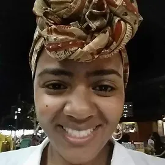

A Casa Afropoty é um hub de empreendedorismo negro potiguar do campo da Economia Criativa - cujas bases principais são: geração de renda, desenvolvimento profissional e criação. Nós contamos histórias afropotyguares através de pesquisas e criações culturais, artísticas e poéticas.
Para a afrodiáspora, as principais tecnologias têm sido historicamente o corpo, a linguagem e a comunidade. Partindo desses princípios, a inovação tecnológica da Casa Afropoty se concentra na promoção de pesquisas em relação às estéticas negras potiguares, através do desenvolvimento de um conceito de arte entregue ao público em forma de narrativas afro referenciadas em múltiplas linguagens criativas. Abraçamos possibilidades criativas inclusivas que propõem perspectivas de acolhimento às diversidades.
Nós existimos também para nos apoiarmos no desenvolvimento de nossos trabalhos e criações, ativando o sentido de comunidade no nosso cotidiano. O projeto surge a partir da expansão do Laboratório Criativo Negro Charme, uma iniciativa que fomenta, desde 2011, a partir de uma perspectiva afroreferenciada, a intersecção entre moda, arte e identidade na cidade do Natal, Rio Grande do Norte e tem agregado outros espaços criativos e pessoas artistas.